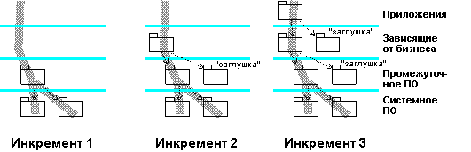

|
В начале этой задачи поставляются подсистемы, удовлетворяющие требованиям следующей ('целевой') компоновки, описанной в
разделеРабочий продукт: План компоновки интеграции, напоминая о том, что
План компоновки интеграции может определять необходимость нескольких компоновок в итерации. В зависимости от сложности
и числа подсистем, которые следует интегрировать, часто более эффективным является создание целевой компоновки на
протяжении ряда шагов, добавляя подсистемы на каждом шаге и создавая ряд промежуточных 'мини' компоновок - таким
образом, каждая спланированная для итерации компоновка может, в свою очередь, иметь собственную последовательность
временных промежуточных компоновок. Они подвергаются минимальным тестам интеграции (обычно подмножеству тестов,
описанных в плане компоновки интеграции для данной целевой компоновки), для того чтобы убедиться, что добавленные
подсистемы совместимы с уже существующими в рабочей области интеграции системы. При таком подходе легче изолировать и
выявлять неполадки.
Ответственный за интеграцию фрагментарно допускает доставленные подсистемы в рабочую область интеграции системы, в
процессе разрешая все возникающие при объединении конфликты. Рекомендуется строить этот процесс снизу вверх, по
отношению к многоуровневой структуре, обеспечивая согласование версий подсистем, принимая во внимание импорт.
Наращивание подсистем компилируется и связывается в промежуточную компоновку, которая затем предоставляется
ответственному за тестирование для выполнения минимального теста интеграции системы.

На этой диаграмме показана компоновка, созданная в процессе трех приращений. Некоторые подсистемы требуются только в
качестве заготовок, для того чтобы можно было компилировать и связать другие подсистемы и обеспечить основной
минимальный алгоритм выполнения.
Окончательное приращение последовательности создает целевую компоновку, запланированную в Плане компоновки интеграции.
После минимального тестирования для этой компоновки создается начальная или предварительная контрольная версия - путем
вызова Задачи: Создать контрольную версию в дисциплине Управление
конфигурацией. Теперь компоновка доступна для выполнения полного тестирования системы ответственными за тестирование.
Характер и глубина этого тестирования определяются в Плане компоновки интеграции, а окончательная компоновка итерации
подвергается всем тестам, определенным в Плане тестирования итерации.
|